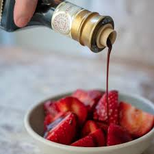
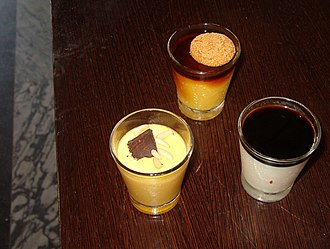

In the traditional aging process product can't be taken until a minimum of 12 years. They would often start the process when a young girl was born and it became part of her dowry.The product is important to the history of Modena even being used as dowry back in the day.
| classification | meaning |
| Aceto Balsamico Tradizonale di Modena DOP | regulated term for traditional Balsamic from Modena, Emilia-Romagna, Italy that uses a specific sytem to indicate age with a white cap indicationg 12 years, a silver label 18 years and gold 25 or more (extravecchio) |
| Aceto Tradizionale di Reggio Emilia DOP | from Reggio Emilia, Emilio-Romagna, designates different ages by label color, read means 12 years, silver, 18 and gold 25 or more |
| Aceto Balsamico di Modena IGP | an ingredient in glazes and condiments |
| Condimenti | condimento balsamico, salsa balsamica, salsa di mosto cotto sauces, glazes or vinegars that include the DOP or IGP but are not manifactured in those standards |
Some of the traditional uses for Balsamic are on top of Parmesan and mortadella or on steaks eggs and fish. Even on fresh fruit like strawberries and plain gelato.

Real traditional vinegar is even sipped plain after a meal sometimes. Contemporarty chefs like to use it on simple meals as the "star of the show".
These are some desserts featuring Balsamic Vinegar
Click Here to learn more
Even Elmo loves it, and when has Elmo ever been wrong?